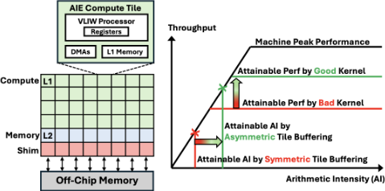
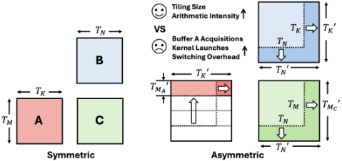
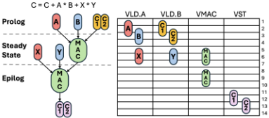
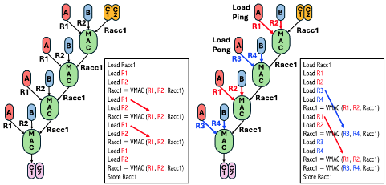
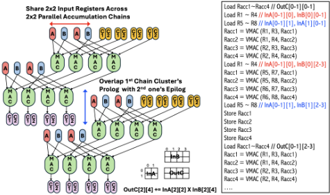

非对称 Tile 缓冲是否有益？
论文针对 GEMM 中长期默认的对称 tile 缓冲（输入 A 沿 M 维的缓冲尺寸等于输出 C 的 tile 尺寸）导致的缓冲压力与 arithmetic intensity 损失，提出非对称 tile 缓冲（ATB），依据 A 行与 C 行数据生命周期不同，将缓冲参数解耦为 (T_M^A, T_M^C, T_K, T_N)。作者建立解析性能模型，同时刻画 ATB 的收益（更高 arithmetic intensity）与开销（kernel 切换成本约 50 cycles），并给出基于 accumulation chain 的 VLIW 微内核效率模型以指导手工调度。在 AMD XDNA2 AIE 上的实验表明：ATB 使对称缓冲下需 91 KB、不可行的 128×64×128 tile 变为可行，吞吐提升 40%；混合精度 BFP16-BF16 GEMM 整阵最高 24.6 TFLOPS，较 MLIR-AIE 基线 4.8 TFLOPS 加速最高 4.54×，创 XDNA2 AIE 性能纪录。核心结论是 memory-bound 时应减小 T_K、增大 ρ，compute-bound 时方向相反，最终性能是二者权衡的结果。
传统 GEMM tiling 在 CPU、GPU、NPU 软件库与加速器设计中普遍采用对称 tile 缓冲，即输入 A 沿 M 维、B 沿 N 维的缓冲尺寸与输出 C 的 tile 尺寸一致，这增加了缓冲需求并使 arithmetic intensity 低于理论上限，在 L1 cache/scratchpad 等窄内存上限制尤为突出。论文要回答：何时以及如何让非对称 tile 缓冲（解耦输入与输出缓冲的 M 维尺寸）在真实硬件上带来收益，并量化其与 kernel 切换开销之间的权衡。
提出 ATB，将 tiling 空间从 (T_M, T_K, T_N) 扩展为 (T_M^A, T_M^C, T_K, T_N)，依据是 A 的行只需存活到对应 C 行累加完成即可逐出。方法包含三层建模：(1) arithmetic intensity 模型，证明 AI 随 T_M^C 与 T_N 单调增，理想策略为最小 T_K、最大 ρ=T_M^C/T_M^A；(2) 基于 accumulation chain 的 VLIW 微内核 ILP 模型，涵盖 double buffering、chain cluster 输入共享、prolog/epilog 重叠等调度技术，并通过微基准刻画 bfp16ebs8 VMAC 的寄存器与延迟参数；(3) 计入 kernel 切换开销（δ≈50 cycles）的核级效率模型，其最优方向（大 T_K、小 ρ）与 AI 模型相反，最终性能由 off-chip 带宽与计算能力共同约束。案例平台为 AMD XDNA2 AIE（Strix Point NPU，32 个 compute core，每核 64 KB L1），使用 IRON API 与 MLIR-AIE 工具链手工实现微内核。
混合精度 BFP16-BF16 GEMM 整阵性能最高 24.6 TFLOPS，较此前最佳 4.8 TFLOPS 取得最高 4.54× 加速，为 XDNA2 AIE 建立新性能纪录
单核层面：MLIR-AIE 仅 0.32 TFLOPS，本文最优设计达 0.92 TFLOPS（2.88× 提升）
Config 1 中 ATB 使需 91 KB、对称缓冲下不可行的 128×64×128 tile 变为可行，吞吐从 17.3 提升至 24.3 TFLOPS（40% 增益）
Config 2 最高 31.3 TFLOPS（较 10.2 TFLOPS 基线 3.07×），ATB 带来 21% 吞吐增益；Config 3 达 28.5 TFLOPS，超 MLIR-AIE Config 2 达 2.79×
对比 Ryzen AI BF16-INT4 GEMM（10.4 TFLOPS），本文 Config 1 BF16-BFP16 GEMM 达 24.3 TFLOPS（2.4×）且累加精度更高
敏感性分析：T_K=8 时 ρ 从 1 增至 8 使 Effcore 下降 25.6%（0.156→0.116），T_K=64 时仅降 5.8%（0.511→0.482）；ρ=4 时 T_K 从 8 增至 64 使 Effcore 提升 3.8×（0.134→0.511）
不同问题规模下性能平滑扩展，大矩阵 GEMM 最高 24.6 TFLOPS，较小规模仍保持 19.2 TFLOPS 以上
据作者所述，这是首次在真实硬件上证明非对称 tile 缓冲既实际可行又显著有益：此前 AIE 研究以及 BLIS、CUTLASS 等 CPU/GPU 框架均只采用对称缓冲，仿真式 design space exploration 研究虽提出过非对称思想，但未分析真实硬件上的开销与 kernel 性能影响。此外，论文给出同时包含 AI 收益与 kernel 切换开销的解析模型，揭示 AI 最大化（小 T_K、大 ρ）与核效率最大化（大 T_K、小 ρ）最优方向相反这一权衡，并以微内核级 accumulation chain 模型补充了以往 AIE 研究缺乏的微内核优化系统性讨论。
相关度级别：low
命中能力域：无明显对应
理由：论文核心贡献是 NPU（AMD XDNA2 AIE）上 GEMM kernel 的 tiling 策略与微内核手工调度优化，属于 AI 加速器软硬件协同优化范畴，与团队内存（LPDDR/HBM/DDR）与互连（UCIe）IP 的架构、RTL 设计、时序物理实现及验证方法学均无直接技术交集；论文将 off-chip 带宽视为给定（约 65 GB/s），不涉及内存 IP 本身的设计、实现或验证。其解析建模方法（arithmetic intensity 与效率的权衡、roofline 分析）属通用体系结构方法，对 2.1 的 workload-driven 性能建模仅有间接方法论参考价值，不构成对七个能力域核心技术或代表工程场景的实质命中。
建议动作：仅了解结论
arXiv:2511.16041v1 [cs.DC] 2025年11月20日
Chengyue Wang 1 , Wesley Pang 2 , Xinrui Wu 1 , Gregory Jun 2 , Luis Romero 3 , Endri Taka 4 , Diana Marculescu 4 , Tony Nowatzki 1 , Pranathi Vasireddy 5 , Joseph Melber 5 , Deming Chen 2 , Jason Cong 1 1 加州大学洛杉矶分校（UCLA） 2 伊利诺伊大学厄巴纳-香槟分校（UIUC） 3 洛桑联邦理工学院（EPFL） 4 德克萨斯大学奥斯汀分校（UT Austin） 5 AMD
通用矩阵乘法（General Matrix Multiplication，GEMM）是现代人工智能（AI）工作负载的计算基石，其效率关键取决于有效的分块（tiling）策略。传统方法采用对称分块缓冲（symmetric tile buffering），即输入 𝐴 沿维度 𝑀 的缓冲分块大小与 𝐶 的输出分块大小相匹配。
本文提出非对称分块缓冲（Asymmetric Tile Buffering，ATB），这是一种简单而强大的技术，可将输入与输出操作数的缓冲分块维度解耦。我们首次证明，ATB 既切实可行又收益显著。为解释这一效应，我们建立了一个性能模型，同时纳入了 ATB 的收益（更高的算术强度）及其开销（更高的内核切换成本），为如何选择有效的 ATB 分块因子提供了洞见。作为案例研究，我们将 ATB 应用于 AMD 最新的 XDNA2™ AI 引擎（AI Engine，AIE），在混合精度 BFP16-BF16 GEMM 上实现了高达 4.54 倍的加速，性能从 4.8 TFLOPS 提升至 24.6 TFLOPS，创下了 XDNA2™ AIE 的全新性能纪录。
人工智能（AI）的快速发展对高效的通用矩阵乘法（GEMM）计算提出了前所未有的需求。在 GEMM 中，我们执行矩阵乘法 𝐶 = 𝐴 × 𝐵 ，其中 𝐴 ∈ R 𝑀 × 𝐾 ，𝐵 ∈ R 𝐾 × 𝑁 ，𝐶 ∈ R 𝑀 × 𝑁 ，𝑀 、𝑁 和 𝐾 分别表示 𝐴 的行数、𝐵 的列数以及规约维度。GEMM 的效率关键依赖于有效的分块（tiling）策略，分块通过复用数据来减少与内存之间的总数据搬运量，从而提高算术强度。因此，分块已成为 CPU、GPU 和领域专用加速器上的标准做法，能够在严格遵守内存带宽约束的同时实现高性能。
然而，我们证明这种对称性对于分块而言并非必要。原则上，输入 𝐴 的缓冲区生命周期仅持续到累加出 𝐶 的单行为止；一旦该行完成，𝐴 中对应的行即可被安全地逐出。这一观察意味着输入与输出分块缓冲区无需共享相同的 𝑀 维度，从而为减少 𝐴 的缓冲需求、并将更多容量分配给 𝐵 和
传统做法是采用对称分块缓冲（symmetric tile buffering），即输入 𝐴 沿 𝑀 维度的缓冲分块大小与输入 𝐵 沿 𝑁 维度的缓冲分块大小均与 𝐶 的输出分块大小相同。这种由三个参数 ( 𝑇 𝑀 , 𝑇 𝐾 , 𝑇 𝑁 ) 定义的统一映射简化了调度与实现，被广泛应用于 CPU、GPU 和神经网络处理器（NPU）软件库以及硬件加速器设计中 [19-21, 23]。尽管应用普遍，对称缓冲却增加了缓冲需求，并使算术强度低于理论最大值（图 1，右侧），这一局限在面向 L1 缓存或便笺式存储器（scratchpad）等窄小存储器时尤为严苛。
chengyue@ucla.edu,qpang2@illinois.edu,cong@cs.ucla.edu

𝐶 。这一洞见引出了本工作的核心问题：非对称分块缓冲何时以及如何才能带来收益？为回答这一问题：
图 1（左）展示了最新的 AMD XDNA2™ 神经处理单元（NPU）架构，该架构已集成于 Strix [3] 和 Kraken [2] Point 笔记本电脑中。它包含一个 AI 引擎（AIE）阵列，由 32 个计算核心、8 个 shim 核心和 8 个存储核心组成。这些核心是可重构模块，通过类 FPGA 的可自适应互连 [1] 相互连接。每个计算核心集成了一个超长指令字（VLIW）处理器、64 KB 的本地 L1 存储器、直接存储器访问（DMA）引擎、寄存器堆，以及两个输入流通道和两个输出流通道。核心间连接可通过流通道进行重构，从而支持灵活的通信模式，例如从单个生产者核心向多个消费者核心进行广播。每个存储核心提供 512 KB 的 L2 存储器，以及六个输入流通道和六个输出流通道。为了访问这一灵活的计算与存储层次结构，IRON [14] 等工具包提供了对数据搬移的显式控制，使开发者能够在 Python 中配置流接口和跨核心的数据搬移，同时链接 C++ 编写的 AIE 内核来对 VLIW 处理器进行编程。
Conference'17，2017 年 7 月，美国华盛顿特区 Chengyue Wang 1 , Wesley Pang 2 , Xinrui Wu 1 , Gregory Jun 2 , Luis Romero 3 , Endri Taka 4 , Diana Marculescu 4 , Tony Nowatzki 1 , Pranathi Vasireddy 5 , Joseph Melber 5 , Deming Chen 2 , Jason Cong 1
算术强度（arithmetic intensity）衡量计算量与数据搬运量之比，对于克服存储器瓶颈至关重要（图1，右）[13, 22]。对于通用矩阵乘法（GEMM），算术强度随分块尺寸的增大而提高。每个 AIE 计算核仅提供两条输入流，通常用于操作数 𝐴 和 𝐵，因而没有剩余通道将部分和传回以进行进一步累加。此外，存储核缺少累加器单元，因此部分和既无法存储在 L2 中，也无法重新加载到计算核。结果，𝐶 的每个输出分块必须在 L1 中完成全部累加后才能写出，而 L2 输出分块的尺寸恰好等于所用各计算核的 L1 分块之和。例如，若每个核计算一个 64 × 64 的 BF16 分块（8 KB），则 32 个核在 L1 中共产生 256 KB 的输出，因此 L2 输出分块尺寸也为 256 KB。因此，L1 输出分块尺寸至关重要：它直接决定 L2 输出分块尺寸，而后者直接决定片外输入数据的复用。
鉴于此，在 L1 存储器中采用非对称分块缓冲是提高算术强度并改善片外数据复用的一种有前景的途径。然而，已有的 AIE 研究 [10, 16-18, 23, 24] 在 L1 和 L2 上均只采用了对称分块缓冲，其分块空间仅由每个存储层级上的三个参数（𝑇𝑀, 𝑇𝐾, 𝑇𝑁）定义。尽管基于仿真的设计空间探索研究 [11, 15] 已探索过非对称分块缓冲的思想，但它们既未分析其在真实硬件上的开销，也未分析其对内核性能的影响。此外，据我们所知，由于硬件限制以及跨多个存储层级管理数据搬运的复杂性，CPU 和 GPU 实现也很少采用此类策略。例如，广泛使用的 GEMM 框架如 BLIS [20] 和 CUTLASS [19] 也依赖于 L1 缓存中的对称分块缓冲。
如图 1（右）所示，高效的内核设计决定了可达性能的上限。在内核内部，计算的基本单元是微内核（microkernel）：一个完全展开的内层循环，对保存在寄存器中的小数据分块执行融合乘加（MAC）运算。AIE 微内核运行在 7 路超长指令字（VLIW）处理器上，其性能取决于 VMAC 指令在编译时被调度的效率。
在内核之间，内核切换期间引入的执行间隙带来了额外的性能挑战。这些间隙源于内核初始化、流水线
尽管大多数已有的 AIE 研究 [10, 16-18, 23, 24] 主要关注 L1、L2 与片外存储器之间的数据搬运，但它们普遍缺乏对 AIE 微内核优化的系统性讨论。此外，虽然微内核可以通过面向 AIE 的 Chess 编译器中的 chess::unroll_loop 等编译器 pragma 进行优化，但对底层执行过程进行解析建模对于指导程序员有效使用这些 pragma 至关重要。再者，混合精度使指令流水线复杂化，导致编译器在不进行手动代码重构的情况下难以完成优化。本文提出一个解析模型，用于指导手动内核优化。

重置以及同步延迟等固有开销。它们会在分块 GEMM 所调用的众多内核间不断累积，从而拉大了微内核级可达性能与核心级可达性能之间的差距。
XDNA2™ 引入了对块浮点（Block Floating Point，BFP16）格式的原生支持 [6]，这是一种在效率与精度之间取得平衡的量化精度。与 BF16 中每个数值都携带自身指数不同，BFP16 在一个由 8 个数值组成的块中共享一个 8 位指数，每个数值仅存储 8 位尾数。这种格式将 8 个元素打包为 9 字节，在 AIE 中表示为 bfp16ebs8 [4]。每个计算核心在专用的 8 × 8 × 8 MAC 单元上执行 BFP16 运算，每周期可持续执行 512 次 MAC 运算。一条 VMAC 指令将两个 8 × 8 的 BFP16 向量寄存器相乘，并累加到一个 8 × 8 的 FP32 累加寄存器中。在 1.8 GHz [5] 的频率下，这可提供每核心 1.84 TFLOPS、整个 32 核阵列 58.8 TFLOPS 的性能。然而，目前在 AMD Strix Point 笔记本电脑上最优的混合精度 BF16-BFP16 GEMM 结果仅为 4.8 TFLOPS [9]。
在通用矩阵乘法（GEMM）中，对称分块缓冲使用 ( 𝑇 𝑀 , 𝑇 𝐾 , 𝑇 𝑁 ) 来定义 𝐴 、 𝐵 和 𝐶 的分块大小，其中 𝐴 tile ∈ R 𝑇 𝑀 × 𝑇 𝐾 ， 𝐵 tile ∈ R 𝑇 𝐾 × 𝑇 𝑁 ， 𝐶 tile ∈ R 𝑇 𝑀 × 𝑇 𝑁 。在每个分块内部，考虑规范的循环顺序 for m in 𝑇 𝑀 { for n in 𝑇 𝑁 { for k in 𝑇 𝐾 {}}} 。对于固定的 𝑚 ，行 𝐴 tile [ 𝑚, : ] 会在所有 𝑛 上被复用，直到对应的行 𝐶 tile [ 𝑚, : ] 完成全部累加，此后 𝐴 的该行便不再需要。相比之下， 𝐶 tile 的每一行都必须在整个 𝐾 维归约（完整问题规模或下一级分块大小）期间保持存活。由于 𝐴 和 𝐶 在 𝑀 维度上的生命周期不同，它们的缓冲范围无需相等。这使得非对称分块缓冲成为可能，其由 ( 𝑇 𝑀 𝐴 , 𝑇 𝑀 𝐶 , 𝑇 𝐾 , 𝑇 𝑁 ) 进行参数化，其中 𝑇 𝑀 𝐴 缓冲 𝐴 的行， 𝑇 𝑀 𝐶 缓冲 𝐶 的行（图2）。在该方案中， 𝐴 tile ∈ R 𝑇 𝑀𝐴 × 𝑇 𝐾 ， 𝐵 tile ∈ R 𝑇 𝐾 × 𝑇 𝑁 ， 𝐶 tile ∈ R 𝑇 𝑀𝐶 × 𝑇 𝑁 （ 𝑇 𝑀 𝐶 ≥ 𝑇 𝑀 𝐴 ）。
设 𝑎, 𝑏, 𝑐 > 0 为 𝐴、𝐵 和 𝐶 的每元素字节开销（例如，BF16 为 2，BFP16 为 1.25），并定义非对称比率 𝜌 = 𝑇 𝑀 𝐶 / 𝑇 𝑀 𝐴（𝜌 ≥ 1）。我们考虑一种输出固定（output-stationary）调度：每个输出 tile 被完整迭代 𝑁 iterk = 𝐾 / 𝑇 𝐾 次（每次都读取 𝐴、𝐵），并在最后写入一次，其中 𝐾 是 GEMM 沿归约维度的问题规模。对于大小为 ( 𝑇 𝑀 𝐴 , 𝑇 𝑀 𝐶 , 𝑇 𝐾 , 𝑇 𝑁 ) 的 tile，其算术强度为
在假设 𝐴、𝐵 采用双缓冲、𝐶 采用单缓冲的情况下，其受可用缓冲容量 𝑆 的约束：
如上所示，AI 𝜌 随 𝑇 𝑀 𝐶 和 𝑇 𝑁 单调递增。重要的是，AI 𝜌 并不显式依赖于 𝑇 𝐾 或 𝜌；它们的影响仅通过缓冲约束（式 1）体现。较小的 𝑇 𝐾 和较大的 𝜌 会降低与 𝑇 𝑀 𝐶 和 𝑇 𝑁 相关的缓冲开销。这释放出更多缓冲空间，从而允许使用更大的 ( 𝑇 𝑀 𝐶 , 𝑇 𝑁 ) 值，进而提高 AI 𝜌。最大化 AI 𝜌 的最优策略是选择尽可能小的 𝑇 𝐾 和尽可能大的 𝜌。在理想化情况下，这对应于 𝑇 𝐾 = 1 且 𝑇 𝑀 𝐴 = 1，此时 𝜌 = 𝑇 𝑀 𝐶。
在 XDNA2™ 中，计算以三个层级的分块方式组织：从片外存储器到 L2、从 L2 到 L1、以及从 L1 到寄存器。如第 2.2 节所述，L2 输出分块是所有计算核心产生的 L1 输出分块的聚合。从 L2 到 L1，存储核心中的一个输入分块可以广播到多个计算核心；具体而言，L2 𝐴 分块沿列方向广播，L2 𝐵 分块沿行方向广播。我们不在 L2 层级应用非对称分块，因为 L2 分块大小受 L1 分块大小的限制，且可用的 L2 存储容量足以容纳对称分块。对于一个 𝑁 aie_row = 4 行、𝑁 aie_col = 8 列的阵列，有效的 L2 分块大小为
因此，对于整个阵列从片外搬移的数据，其计算强度建模为：
其受每个核心 L1 容量 𝑆 𝐿 1 = 63 KB 的约束：
与对 AI 𝜌 的分析类似，最大化 AIarray 的最优策略是最小化 𝑇 𝐿 1 𝐾 并最大化 𝜌 。
计算强度模型预测，通过最小化 𝑇 𝐾 并最大化 𝜌 可使性能达到最大。但在实际中，这忽略了微内核（microkernel）的执行：过小的 𝑇 𝐾 会在计算流水线中引入气泡（bubble），并推高 prolog/epilog 开销。为了刻画这些影响，我们必须引入计算核心效率（compute core efficiency），而它本身又取决于分块因子。我们将在下一节（第 5 节）中对此进行细化，并特别以 AIE 的超长指令字（VLIW）核心作为案例进行研究。

VLIW 架构的一个关键特性是其确定性的指令调度，该调度在编译时被静态固定。这一特性使得性能可以直接从指令序列本身进行估计。尽管诸如存储器停顿或锁获取等运行时冒险可能引入变异性，但对于我们的分析而言，静态指令调度清晰地刻画了内核的峰值潜力。计算核心的性能通过其实现的吞吐量接近硬件理论最大值的程度来评估，可通过下式量化：
内核设计的关键挑战在于利用指令级并行（ILP）来隐藏 L1 存储器与寄存器之间的数据搬运延迟，并最大化 VMAC 指令的发射速率。对于 GEMM 内核而言，最关键的 VLIW 槽位是：
从指令调度的角度来看，最大化效率对应于最大化向量算术单元的利用率。因此，我们使用已发射的 VMAC 指令数与所关注代码区域（通常为微内核）中的总周期数之比来评估内核调度。
一般而言，在资源约束下对任意有向无环图（DAG）进行指令调度是 NP 难问题 [12]，不存在闭式解。本节将范围缩小至 GEMM 微内核。在这一设定下，指令调度可以用简单的解析界很好地近似，从而指导微内核优化。
我们模型中的基本单元是累加链（accumulation chain），它表示在不发生累加寄存器溢出（spill）的情况下，更新一条 VMAC 指令的一个累加操作数所需的指令序列。所有指令均以每周期一条的吞吐量流水化执行，但延迟可能各不相同。我们将指令调度分解为三个阶段：
Conference'17，2017 年 7 月，美国华盛顿特区 Chengyue Wang 1, Wesley Pang 2, Xinrui Wu 1, Gregory Jun 2, Luis Romero 3, Endri Taka 4, Diana Marculescu 4, Tony Nowatzki 1, Pranathi Vasireddy 5, Joseph Melber 5, Deming Chen 2, Jason Cong 1
延迟 ℓ 𝑖 和数量 𝑛 𝑖，需在 𝑈 LD 个向量加载槽位上发射。所有操作数变为就绪所需的最小时间为
其中，指令类型按延迟降序排列，即 ℓ ( 1 ) ≥ ℓ ( 2 ) ≥ · · · ，且 𝑆 ( 𝑖 ) = 𝑖 𝑘 = 1 𝑛 ( 𝑘 ) 为前 𝑖 种操作数类型的加载累计数量。直观地说，该公式假设所有加载相互独立且可任意重排。延迟最长的加载最先发射，从而尽可能隐藏其延迟，而延迟较短的加载可稍后发射并与之重叠。最终时间由最后完成的那组加载（长或短）决定。在图 3 中，共有 3 种延迟为 ℓ = 3 的指令类型，数量为 𝑛 𝐶 = 2、𝑛 𝐴 = 𝑛 𝐵 = 1，且 𝑈 LD = 2，可得 𝑆 ( 1 ) = 2、𝑆 ( 2 ) = 3、𝑆 ( 3 ) = 4。代入可得 𝑇 load = max ( 3 +⌈ 2 / 2 ⌉ - 1 , 3 +⌈ 3 / 2 ⌉ - 1 , 3 + ⌈ 4 / 2 ⌉ - 1 ) = max ( 3 , 4 , 4 ) = 4 个周期。
其中 𝑃 为 VMAC 流水线深度，𝑅 load 为每条 VMAC 的操作数加载数量。为隐藏延迟 𝑃 并提升 VMAC 吞吐量，微内核通常采用多条并行累加链，并在软件流水调度中交错执行。当 𝐶 条并行链交错时，有效 𝐼 𝐼 为：
稳态开销的下界为：
其中 𝑁 accum 为累加器更新次数（即累加链的长度）。
其中 ℓ vmac → vst 是从最后一条 VMAC 到其存储指令可发射时的延迟，ℓ store 为存储指令延迟，𝑛 store 为每个累加器所需的存储指令数量。
输入寄存器的双缓冲。在我们的稳态建模中，我们仅考虑了加载带宽，并假设有足够的寄存器来保存并行加载，从而完全隐藏加载延迟。这一假设在实践中是合理的，因为编译器通常会执行寄存器重命名并分配互不重叠的寄存器来自动实现这一效果。当编译器无法有效应用此类优化时，AIE 程序员可以使用 chess_storage(register) 属性手动将变量固定到寄存器上。在这种情况下，输入寄存器的乒乓缓冲成为一种重要技术。通过在两个互不重叠的寄存器组（Ping / Pong）之间交替，微内核可以在一组中预加载操作数，同时另一组被 VMAC 指令消耗。图 4 说明了这一点：左侧的调度反复向相同的寄存器重新加载，在加载与计算之间产生 RAW 依赖，而右侧采用双缓冲，使加载与计算重叠。


跨链簇共享输入。为了提升微内核性能，重要的是采用多条并行累加链，使稳态中的有效 𝐼 𝐼 接近 1，如式 (7) 所建模。在实践中，这些链并非完全独立：它们通常共享来自矩阵 𝐴 或 𝐵 的公共输入操作数，我们将其称为链簇（chain cluster）。当微内核在链簇内共享输入寄存器时，每个 VMAC 的加载次数得以减少，从而缓解加载带宽的压力并降低式 (7) 中的 𝑅 load。这种复用还减少了输入寄存器的使用，为双缓冲隐藏加载延迟创造了更多机会。簇的大小受累加器寄存器堆中可同时保存的累加器操作数数量的限制。图 5（左上）展示了这一优化，其中共享输入同时馈送多条链；例如，一个 2 × 2 的链簇将加载次数从 8 次减少到 4 次。
重叠相邻链簇。即使使用链簇在稳态中达到了最优的 𝐼 𝐼 = 1，总延迟仍然包括前导（prolog）和收尾（epilog）阶段。如果相邻的链簇顺序执行，每个链簇只有在前一个完成后才开始，则总延迟受下式约束
然而，链的长度在算法上受 L1 存储器中分块（tile）的 𝐾 维度约束。当 𝐾 较小时，前导和收尾开销相对于 𝑇 steady 而言非常显著。为解决这一问题，相邻簇可以在软件流水调度中重叠：当一个簇正在排空其收尾阶段时，下一个簇可以开始其前导阶段。如果重叠在理想情况下隐藏了边界开销，则 𝑁 clusters 个链簇（每个包含 𝐶 条链）的延迟受下式约束
𝐿 total ≥ 𝑇 prolog + 𝑇 steady + 𝐼 𝐼 parallel · 𝐶 · 𝑁 clusters + 𝑇 epilog . 图 5（左下）展示了这一效果，其中重叠执行缩小了链簇之间的间隙，从而获得更高的利用率。
由于公开文档并未提供精确的寄存器行为，我们使用带有小型 VMAC 内核和显式寄存器绑定的微基准测试来近似估计各参数。对于 bfp16ebs8 VMAC 指令，我们观察到五个累加器寄存器，每个寄存器持有 8 × 8 个 FP32 元素，流水线距离为 𝑃 = 3 个周期。操作数加载的延迟为 8 个周期；由于 bfp16ebs8 是非对齐的，因此每当访问非连续地址时，都会在加载之前先执行一条 VLDA.POP。从 VMAC 到存储可用的延迟为 ℓ vmac → vst = 6 个周期，而写回一个累加器寄存器需要两条延迟为 ℓ store = 2 个周期的存储指令。
架构约束可能使 BFP16 内核的性能低于解析界限。指令流水线偏好顺序的 L1 访问，因为非对齐的 BFP16 地址需要额外的指令，并可能引入气泡。此外，BFP16 与 BF16 之间的转换会占用累加器寄存器，而较小的累加器堆进一步限制了并发的加载-存储操作，从而在相继的簇之间造成假依赖。我们的模型有助于设计者推断性能损失究竟源于硬件限制还是编译器调度，并指导诸如循环展开、寄存器级分块、寄存器绑定和双缓冲等手动优化。
阵列的最终性能同时受数据搬运与计算能力的共同约束：
其中 𝐵𝑊 offchip 为可用的片外带宽，对于 Strix Point 笔记本电脑约为 65 GB/s。𝑁 core = 32 为计算核心的数量，Perf peak core = 1.84 TFLOPS 为单核峰值性能，Effcore 为计算核心效率。
𝑇 𝐿 1 𝐾 的影响。较大的 𝑇 𝐿 1 𝐾 会增加微内核中的累加链长度 𝑁 accum，从而允许式 11 或式 10 中的稳态持续更长时间。出于保守性考虑，我们采用式 10。将其与式 8 相结合，我们将微内核效率 Effmicro 建模为
由于 𝑁 accum 随 𝑇 𝐿 1 𝐾 缩放，我们可以近似得到
| 𝑇 𝐾 | 𝜌 | Perf micro (Tflops) | Eff micro | Perf core (Tflops) | Eff core |
|---|---|---|---|---|---|
| 8 | 1 | 0.36 | 0.2 | 0.29 | 0.156 |
| 8 | 2 | 0.36 | 0.2 | 0.277 | 0.149 |
| 8 | 4 | 0.36 | 0.2 | 0.25 | 0.134 |
| 8 | 8 | 0.36 | 0.2 | 0.216 | 0.116 |
| 16 | 1 | 0.66 | 0.36 | 0.529 | 0.284 |
| 16 | 2 | 0.66 | 0.36 | 0.501 | 0.272 |
| 16 | 4 | 0.66 | 0.36 | 0.474 | 0.257 |
| 16 | 8 | 0.66 | 0.36 | 0.359 | 0.195 |
| 32 | 2 | 0.76 | 0.41 | 0.615 | 0.331 |
| 32 | 4 | 0.75 | 0.41 | 0.574 | 0.312 |
| 32 | 8 | 0.77 | 0.42 | 0.562 | 0.306 |
| 64 | 4 | 1.16 | 0.63 | 0.92 | 0.511 |
| 64 | 8 | 1.16 | 0.63 | 0.867 | 0.482 |
| 𝑇 𝐾 | 𝜌 | Perf micro (Tflops) | Eff micro | Perf core (Tflops) | Eff core |
该表达式刻画了收益递减的特性：当 𝑇 𝐿 1 𝐾 ≪ 𝜖 𝜂 𝐼𝐼 时，Effmicro 呈线性增长；而随着 𝑇 𝐿 1 𝐾 的增大，它会饱和至 1 𝐼 𝐼。
非对称性的影响。在相继的微内核之间，我们观察到切换微内核存在固定开销，通过追踪测得为 𝛿 ≈ 50 个周期。对于一个核心要完成一个输出分块 ( 𝑇 𝐿 1 𝑀 𝐶 𝑇 𝐿 1 𝑁 ) 而言，在对称情形下需要 𝐾 𝑇 𝐿 1 𝐾 次切换，而在使用非对称分块缓冲时需要 𝜌 · 𝐾 𝑇 𝐿 1 𝐾 次切换。其延迟为
综合效率。由此得到的有效核心效率为
最大化 Effcore 的最优策略是选择尽可能大的 𝑇 𝐾 和尽可能小的 𝜌，而这与最大化 AI 𝜌 的策略恰好相反。因此，最终性能（式 12）产生于最大化算术强度与维持高计算效率之间的权衡。
我们的实验使用 AMD Ryzen™ AI 9 HX 370（Strix Point NPU）。我们使用 IRON API 和 MLIR-AIE 工具链 [14] 对 NPU 进行编程，以在三种精度配置下测量性能：配置 1：BF16-BFP16 混合精度。输入 𝐴 和输出 𝐶 采用 BF16，权重 𝐵 采用 BFP16，累加在 BF16 中进行。配置 2：𝐴、𝐵 和 𝐶 全部以 BFP16 存储，累加同样在 BFP16 中进行。配置 3：𝐴、𝐵 和 𝐶 全部以 BFP16 存储，累加在 BF16 中进行。
表 1 总结了在不同 𝑇 𝐾 与 𝜌 组合下的微内核级性能（Perf micro、Effmicro）和完整核心级性能（Perf core、Effcore），所有结果均在精度配置 1 下评估，L1 分块尺寸为 𝑇 𝑀 𝐴 = 128 和 𝑇 𝑁 = 128。当 𝑇 𝐾 = 64 时，配置 𝜌 = 1 和 𝜌 = 2 超出了可用的 63 KB L1 存储器容量；当 𝑇 𝐾 = 32 时，𝜌 = 1 也超出了该容量。
Conference'17，2017 年 7 月，美国华盛顿特区 Chengyue Wang 1、Wesley Pang 2、Xinrui Wu 1、Gregory Jun 2、Luis Romero 3、Endri Taka 4、Diana Marculescu 4、Tony Nowatzki 1、Pranathi Vasireddy 5、Joseph Melber 5、Deming Chen 2、Jason Cong 1
| Precision | Source | Problem size (M × K × N) | L1 tile size ( 𝑇 𝐿 1 𝑀𝐶 × 𝑇 𝐿 1 𝐾 × 𝑇 𝐿 1 𝑁 ) | 𝜌 | Used Buffer (KB) | Buffer if 𝜌 = 1 | Perf core (Tflops) | Compute-bound (Tflops) | AI array (op/B) | Memory-bound (Tflops) | Perf array (Tflops) |
|---|---|---|---|---|---|---|---|---|---|---|---|
| BF16-INT4 | Ryzen AI | 2048 × 4096 × 4096 | Unknown | 1 | Unk | Unk | Unk | Unk | Unk | Unk | 10.4 |
| Config 1 | MLIR-AIE | 8192 × 4224 × 4096 | 64 × 88 × 64 | 1 | 50.4 | 50.4 | 0.32 | 10.2 | 216 | 14.1 | 4.8 (1.00 × ) |
| Config 1 | Ours | 2048 × 4096 × 2048 2048 × 4480 × 2048 4096 × 4096 × 2048 | 64 × 64 × 128 64 × 224 × 64 128 × 64 × 128 | 1 4 4 | 54.5 57.4 60.3 | 54.5 111 91 | 0.95 0.96 0.95 | 30.5 30.7 30.4 | 273 217 410 | 17.8 14.1 26.6 | 17.3 (3.61 × ) 12.3 (2.56 × ) 24.3 (4.54 × ) |
| Config 2 | MLIR-AIE | 7680 × 4096 × 8192 | 96 × 128 × 64 | 1 | 58.5 | 58.5 | 0.38 | 12.2 | 333 | 21.7 | 10.2 (1.00 × ) |
| Config 2 | Ours | 4096 × 4096 × 2048 | 128 × 64 × 128 | 1 | 54 | 54 | 0.84 | 26.9 | 504 | 32.8 | 25.9 (2.54 × ) |
| Config 2 | 4096 × 4096 × 2048 3072 × 4096 × 1536 | 256 × 64 × 128 192 × 128 × 96 | 8 6 | 58.5 56.3 | 90 101 | 0.73 1.06 | 23.3 33.9 | 728 562 | 47.3 36.5 | 22.3 (2.19 × ) 31.3 (3.07 × ) | |
| Config 3 | Ours | 3072 × 4096 × 2048 | 96 × 64 × 128 | 1 | 57 | 57 | 1.00 | 32 | 418 | 27.2 | 27.0 (2.65 × ) |
| 4096 × 4096 × 2048 | 128 × 64 × 128 | 4 | 56.5 | 70 | 0.90 | 28.8 | 504 | 32.8 | 28.5 (2.79 × ) |
| Precision | Source | Problem size (M × K × N) | L1 tile size ( 𝑇 𝐿 1 𝑀𝐶 × 𝑇 𝐿 1 𝐾 × 𝑇 𝐿 1 𝑁 ) | 𝜌 | Used Buffer (KB) | Buffer if 𝜌 = 1 | Perf core (Tflops) | Compute-bound (Tflops) | AI array (op/B) | Memory-bound (Tflops) | Perf array (Tflops) |
此外，MLIR-AIE [9] 在单个核心上仅达到 0.32 TFLOPS，而我们最优的设计达到了 0.92 TFLOPS，实现了 2.88 倍的提升。他们的方法主要依赖编译器驱动的优化，而这类优化对 BFP16 并不有效；我们的内核设计则采用了手动调度技术，例如展开（unrolling）、寄存器级分块（register-level tiling）、显式寄存器绑定（explicit register binding）和双缓冲（double buffering）。
总体而言，实测结果与第 5 节所预测的解析趋势高度吻合。正如预期，微内核效率 Effmicro 仅取决于 𝑇 𝐾，并且在不同的 𝜌 下几乎保持不变。对于固定的 𝑇 𝐾，增大 𝜌 会持续降低核心效率 Effcore，因为更大的不对称性会增加微内核切换的次数并放大启动开销。例如，在 𝑇 𝐾 = 8 时，随着 𝜌 从 1 增加到 8，Effcore 下降了 25.6%（从 0.156 降至 0.116）。在 𝑇 𝐾 = 64 时，降幅则小得多，仅为 5.8%（从 0.511 降至 0.482），这是因为更大的 𝑇 𝐾 带来更长的内核执行时间，从而能够更好地摊销切换成本。相反，对于固定的 𝜌，更大的 𝑇 𝐾 通过延长稳态阶段并降低前导/尾声（prolog/epilog）周期的相对影响，同时提升了微内核效率和核心效率。在 𝜌 = 4 时，Effcore 从 𝑇 𝐾 = 8 时的 0.134 增加到 𝑇 𝐾 = 64 时的 0.511，提升了 3.8 倍。这些结果与理论预测相符：核心效率随 𝑇 𝐾 增大而提升，而增大 𝜌 会降低效率。
| M | K | N | Performance (Tflops) |
|---|---|---|---|
| 1024 | 2048 | 2048 | 19.2 |
| 1024 | 4096 | 2048 | 21.8 |
| 1024 | 8192 | 2048 | 23.3 |
| 2048 | 2048 | 2048 | 21.8 |
| 2048 | 4096 | 2048 | 23.3 |
| 2048 | 8192 | 2048 | 24 |
| 4096 | 2048 | 2048 | 23.2 |
| 4096 | 4096 | 2048 | 24.3 |
| 4096 | 8192 | 2048 | 24.6 |
| M | K | N | Performance (Tflops) |
在本工作中，我们提出了非对称分块缓冲（Asymmetric Tile Buffering, ATB），这是一种通用的分块策略，能够在神经网络处理器（NPU）上降低缓冲压力，并使算术强度超越传统的对称缓冲方法。在 AMD XDNA2™ AIE 上，ATB 将 GEMM 吞吐量提升了高达 40%，甚至优于高度优化的对称内核。我们还提出了相应的内核设计策略，相比最先进的 GEMM 实现取得了 4.54× 的加速。未来，我们计划探索自动化搜索与调度，使基于 ATB 的内核生成实现完全自动化。